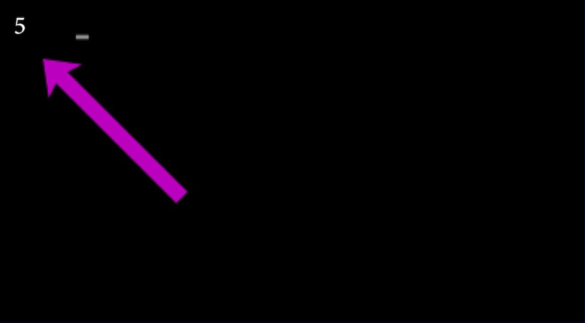
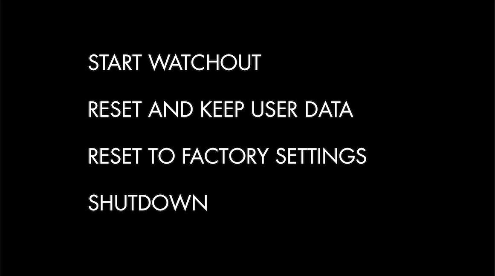
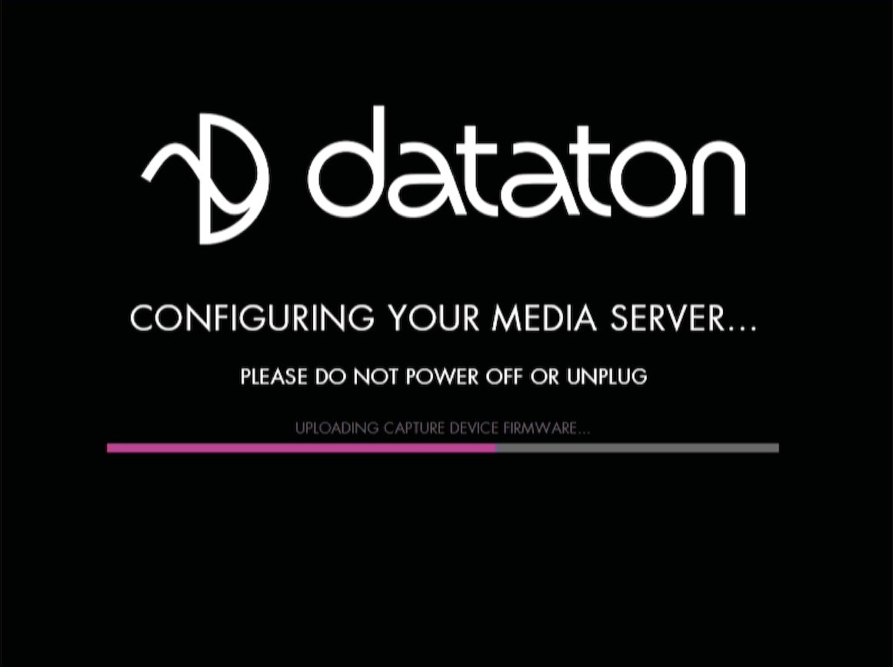
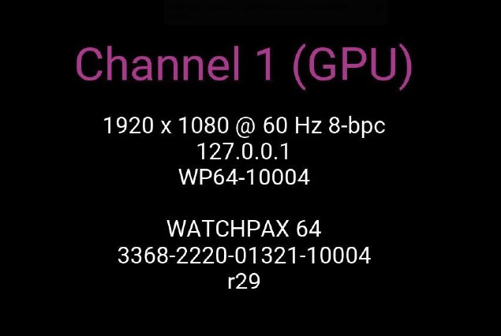

Reset WATCHPAX 64
Zdarzają się sytuacje, w których konieczny może być reset WATCHPAX 64, na przykład gdy urządzenie zostało uszkodzone lub jest to urządzenie wynajmowane i między kolejnymi wynajmami trzeba usunąć dane użytkownika.
Dostępne są dwa poziomy resetu:
- Reset z zachowaniem danych użytkownika. Resetuje system operacyjny, ustawienia wyświetlania, GPU i przechwytywania, ale zachowuje dane użytkownika, takie jak pokazy i media.
- Reset do ustawień fabrycznych. Przywraca urządzenie do oryginalnych ustawień fabrycznych — wszystkie dane użytkownika zostają utracone.
Reset, niezależnie od poziomu, jest zaawansowaną operacją. Upewnij się, że w pełni rozumiesz, jakie dane utracisz podczas resetu!
Reset z zachowaniem danych użytkownika
Ta opcja resetuje partycje systemowe, ale zachowuje wszystkie dane użytkownika, takie jak:
- Pokazy
- Media
- Ustawienia WATCHOUT
- Skrypt startowy
- Ustawienia sieciowe
- Ustawienia kodu czasowego
Ustawienia związane ze sterownikami zostaną przywrócone do domyślnych ustawień fabrycznych, takie jak:
- Ustawienia wyświetlania
- Tryb wyświetlania
Reset do ustawień fabrycznych
Ta opcja resetuje wszystkie partycje do ustawień fabrycznych — wszystkie dane użytkownika zostaną utracone. Ten poziom resetu jest odpowiedni, gdy chcesz usunąć wszystkie ustawienia między projektami.
Procedura resetu
Menu resetu jest celowo ukryte, aby zapobiec przypadkowemu resetowi lub nadużyciu. Aby zresetować urządzenie WATCHPAX 64, wykonaj następujące kroki:
- Wyłącz WATCHPAX 64.
- Odłącz wszystkie urządzenia USB.
- Podłącz klawiaturę do jednego z portów USB.
- Podłącz co najmniej jedno urządzenie wyświetlające do wyjścia DisplayPort.
- Włącz WATCHPAX 64.
- Podczas uruchamiania w lewym górnym rogu wyświetlacza pojawi się pięciosekundowe odliczanie. Naciśnij klawisz Esc podczas tego odliczania.

Jeśli nie widzisz licznika, oznacza to, że urządzenie wyświetlające potrzebuje więcej czasu na synchronizację z wyjściem. W takim przypadku naciskaj wielokrotnie klawisz Esc po włączeniu zasilania, aby przejść do poniższego menu.
- Wybierz żądaną opcję resetu w wyświetlonym menu i naciśnij Enter.
Nie będzie potwierdzenia — proces resetu rozpocznie się natychmiast!

- Jak wspomniano powyżej, proces resetu rozpoczyna się natychmiast, wyświetlając informacje o postępie.

- WATCHPAX 64 uruchomi się ponownie kilka razy w celu skonfigurowania systemu operacyjnego i sprzętu.

Nie wyłączaj urządzenia podczas procesu konfiguracji!
- Po zakończeniu procesu uruchomi się WATCHOUT. Wersja obrazu systemu zostanie dopisana po numerze seryjnym.
